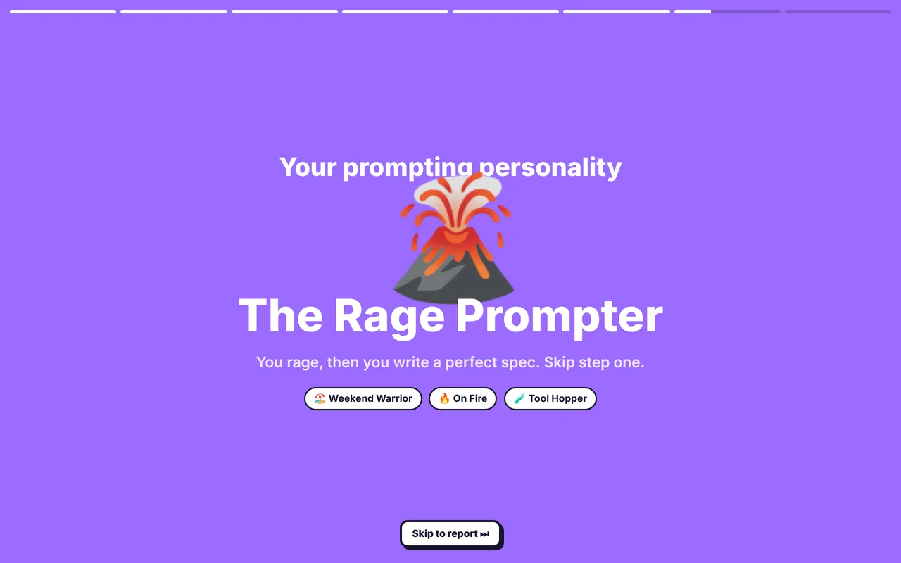
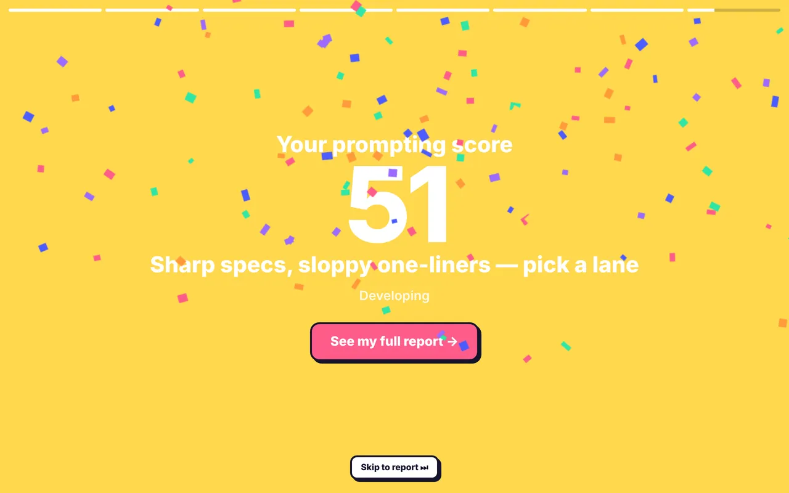
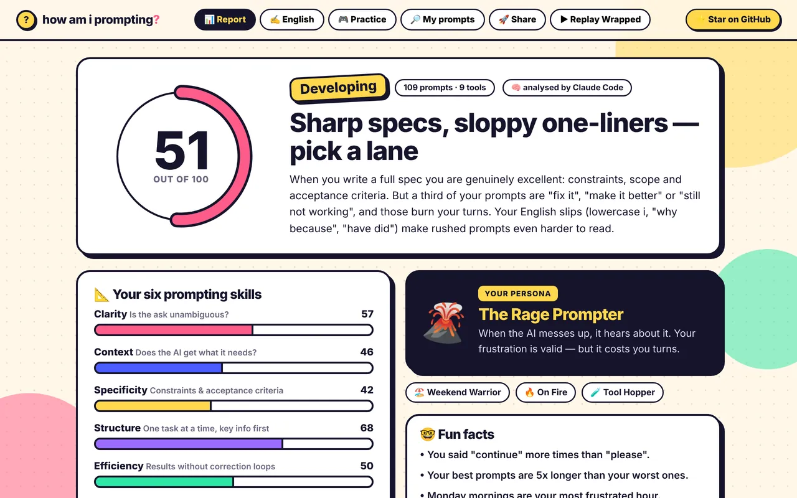
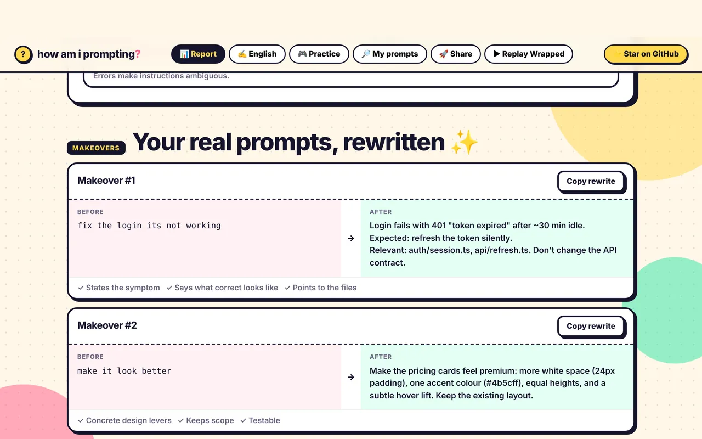
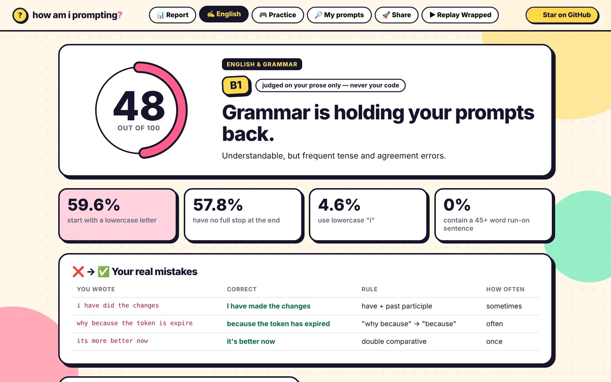
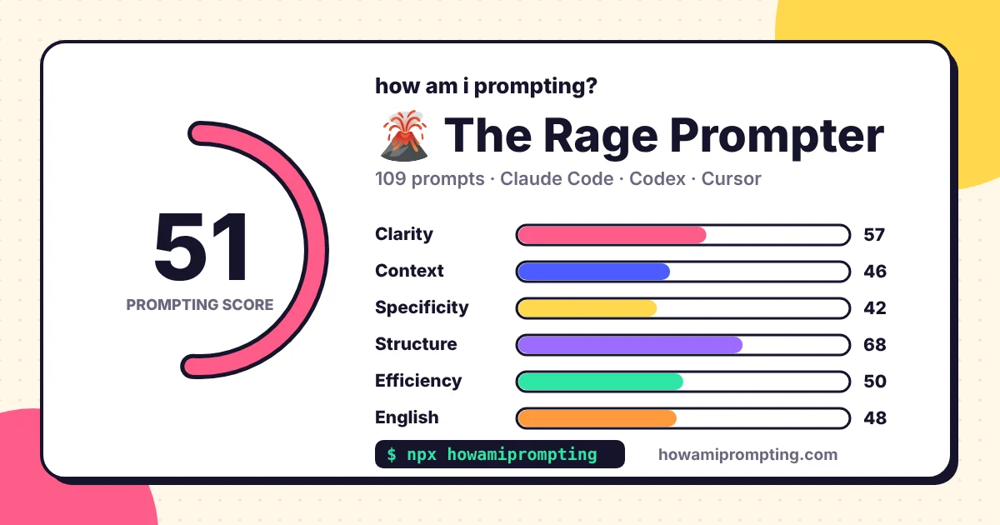

🎯
State one clear goal
"fix the login" → "Login returns 401 after 30 minutes idle; it should refresh the token silently."
Free AI prompt analyzer · Spotify Wrapped for your coding prompts
One command reads every Claude Code, Codex, Cursor, Gemini, Copilot & Cline chat on your machine, scores how you prompt — and your English — then rewrites your worst prompts and coaches you to get better.



Claude Code prompts, Cursor chats, Codex sessions, Copilot Chat and more — found automatically on your machine.
Not a lint check. Your own AI reads a sample of your real prompts and writes you a coaching report.
Prompts written, your AI crew, prime-time hour, catchphrases, rage moments — and your prompting personality.
Clarity, context, specificity, structure, efficiency and English — with what's dragging each one down.
Your worst real prompts, rewritten the way a senior engineer would write them. Copy, paste, learn.
Your actual grammar mistakes, corrected, with a CEFR estimate. Judged on your prose — never your code.
Finds the instructions you type every session and turns them into a CLAUDE.md, AGENTS.md or Cursor rules file.
Four timed mini-games built from your weak spots. No paste, no spell-check. Re-run monthly to watch your score climb.

Most wasted agent turns come from prompts that make the AI guess. See exactly which of yours do — and how to rewrite them.
"why because the token is expire" costs you a turn. Get your real mistakes, the fix and the rule — then practise.

Prompting tips
The habits that separate prompts that work first time from prompts that burn ten turns. How Am I Prompting? measures every one of them in your real history.
"fix the login" → "Login returns 401 after 30 minutes idle; it should refresh the token silently."
Say what happens now, what should happen, and paste the error with one line of your own theory.
Name the files, functions or pages involved so the agent doesn't have to guess where to look.
"Only change checkout.tsx — don't touch the API." Constraints prevent surprise rewrites.
Split "add export and also fix the filter and also the date picker" into numbered steps.
Move "use pnpm", "TypeScript strict", "no comments" into CLAUDE.md, AGENTS.md or .cursor/rules.
Capital letters, full stops and correct tense remove ambiguity. Grammar slips become wrong instructions.
Re-prompting with no new information repeats the same failed attempt. Add what changed.
Read-only scan of your AI tools' history folders. Only what you typed is kept — replies, tool output and pasted code/logs are dropped. Keys, tokens and passwords are redacted.
Dozens of stats are computed on your machine: length, timing, one-word "ok"s, frustration, context-giving, repeated instructions, punctuation, grammar patterns.
A sample of ~180 prompts goes to the agent you already use — Claude Code, Codex, Gemini CLI, your API key or local Ollama — and your report opens in the browser.
There is no account and no telemetry in the CLI. The deep analysis runs through your own AI login or key. Want zero network? Use a local Ollama model.
It's all open source — read every line.

How Am I Prompting? is a free, open-source command-line tool for developers. Run npx howamiprompting and it reads the prompts you have written to AI coding assistants such as Claude Code, Cursor, Codex, Gemini CLI and GitHub Copilot, scores how well you prompt, rewrites your weakest prompts and gives you a personal improvement plan. It's like Spotify Wrapped for your AI coding prompts.
State one clear goal, describe the current behaviour and the expected behaviour, point to the relevant files, add constraints (what not to touch) and say what done looks like. Give one task at a time or number the steps. When something fails, paste the new error with one line of your own theory instead of writing "still not working". Put rules you repeat every session into a CLAUDE.md or AGENTS.md file. How Am I Prompting? checks your real prompts against all of these.
Claude Code, OpenAI Codex CLI, Cursor (Chat, Composer and Agent), GitHub Copilot Chat in VS Code, Gemini CLI, Windsurf, Antigravity, Trae, Kiro, Cline, Roo Code, Kilo Code, Continue, OpenCode, Aider and SpecStory. Any other tool works by importing an export file with --include.
Your prompts are never sent to us. The tool reads your chat history locally, keeps only what you typed, removes pasted code and logs, and redacts API keys, tokens and passwords. For the deep analysis it sends a small sample of prompts through the AI agent you already use (your own Claude Code, Codex, Gemini or API key), or a local Ollama model that never leaves your machine. The code is open source on GitHub.
Yes. It is free and MIT-licensed. There is no account, no sign-up and no paid plan. The analysis uses a few calls of your own AI quota, or none at all with a local Ollama model.
No. If you have Claude Code, Codex CLI or Gemini CLI installed and logged in, it uses that. It can also use an ANTHROPIC_API_KEY, OPENAI_API_KEY or OPENROUTER_API_KEY, or a local Ollama model. If you have none of them, the CLI helps you set one up — for example the free Gemini CLI with a Google account.
Your prompts are scored from 0 to 100 on six skills: clarity, context, specificity, structure, efficiency and English. Your own AI agent reads a stratified sample of about 180 prompts in batches, and local metrics (prompt length, one-word replies, frustration loops, context-giving, repeated instructions, punctuation and grammar patterns) are computed on your machine. The overall score is a weighted average of the six skills.
CLAUDE.md (Claude Code), AGENTS.md (Codex and others), GEMINI.md, .cursor/rules and copilot-instructions.md are rules files your AI agent reads at the start of every session. How Am I Prompting? finds instructions you keep repeating, like "use pnpm" or "don't add comments", and generates a ready-to-paste rules file so you never type them again.
Yes. English is one of the six skills. It shows your real grammar mistakes with corrections and the rule behind each one, estimates your CEFR level (A2 to C2) and only judges your prose, never your code. Practice mode has four timed mini-games built from your own weak spots.
Yes. Download a share card image for X or LinkedIn, or share your full report as a link or a single HTML file. The report is packed inside the link itself, so nothing is uploaded to a server.
Node.js 18.17 or newer. Reading Cursor history needs Node.js 22.5+ or the sqlite3 command, which comes with macOS. It works on macOS, Linux and Windows.
Only on your own computer, in ~/.howamiprompting/, so you can track your score over time. Clear it any time with npx howamiprompting --reset.
Founder from Kolkata, building SaaS products like GoDial and HyperScreenshot. I talk to Claude Code and Codex all day and wanted to know if I was any good at it — so I built the tool I wished existed.